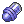
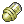
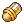
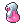
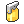
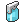
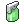
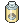
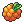

玉虹市Celadon City
- 地區
- 關都
- 種類
- 城鎮
- 天氣
- 晴朗 42%・陰天 26%・下雨 16%・打雷 5%・霧 5%・大晴天 6%
這裡的建築與地點
商店：玉虹百貨
| 道具 | 價格 | 條件 |
|---|---|---|
 力量強化 力量強化 | 500 | 一開始即可 |
 防禦強化 | 550 | 一開始即可 |
 速度強化 速度強化 | 350 | 一開始即可 |
 特攻強化 | 350 | 一開始即可 |
 命中強化 命中強化 | 950 | 一開始即可 |
 能力防守 能力防守 | 700 | 一開始即可 |
 要害攻擊 | 650 | 一開始即可 |
 學習裝置 學習裝置 | 50,000 | 1 枚徽章，大木博士來訪之後 |
商店：友好商店
| 道具 | 價格 | 條件 |
|---|---|---|
 精靈球 精靈球 | 200 | 一開始即可 |
 超級球 超級球 | 600 | 一開始即可 |
 高級球 高級球 | 1,200 | 4 枚徽章 |
 傷藥 傷藥 | 300 | 一開始即可 |
 好傷藥 好傷藥 | 700 | 一開始即可 |
 厲害傷藥 | 1,200 | 4 枚徽章 |
| 活力碎片 | 1,500 | 一開始即可 |
 解毒藥 | 100 | 一開始即可 |
 解麻藥 解麻藥 | 200 | 一開始即可 |
 解眠藥 | 250 | 一開始即可 |
 灼傷藥 | 250 | 一開始即可 |
 解凍藥 解凍藥 | 250 | 一開始即可 |
| 萬靈藥 | 600 | 一開始即可 |
 除蟲噴霧 除蟲噴霧 | 350 | 一開始即可 |
 白銀噴霧 白銀噴霧 | 500 | 一開始即可 |
 黃金噴霧 | 700 | 6 枚徽章 |
 離洞繩 離洞繩 | 550 | 一開始即可 |
| 學習裝置 | 50,000 | 1 枚徽章，大木博士來訪之後 |
 蔓莓果 | 100 | 一開始即可 |